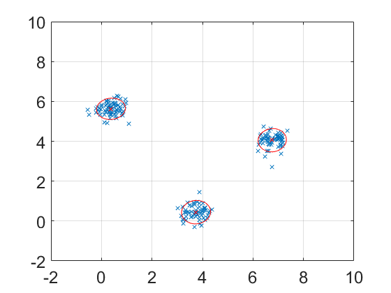

clear all close all % This script demonstrates Incremental Gaussian Mixture learning on 2D data % with three distinct clusters % Load data load yrep % Plot raw data points figure plot(y(:,1),y(:,2),'x'); hold on % 2 x N format (features x samples) x = y'; % Covariance scale s0 = mean(std(y)); % Incremental GMM mix = igmm_init (x(:,1),s0); [d,N]=size(x); % d = dimension, N = sample number % Incrementally update GMM for n=2:N, %mix = igmm_update_diag (mix,x(:,n)); mix = igmm_update (mix,x(:,n)); end % Number of mixture components mix.m = mix.M; % Plot means of Gaussian components for i=1:mix.M, mix.state(i).C = inv(mix.state(i).Lambda); % Precision matrix to covariance matrix plot(mix.state(i).m(1),mix.state(i).m(2),'rx'); end hold on % Plot Gaussian components as contour ellipses spm_mix_plot2d(mix,[-2 10 -2 10],1,'r',0.4,0.5); set(gca,'FontSize',18); grid on